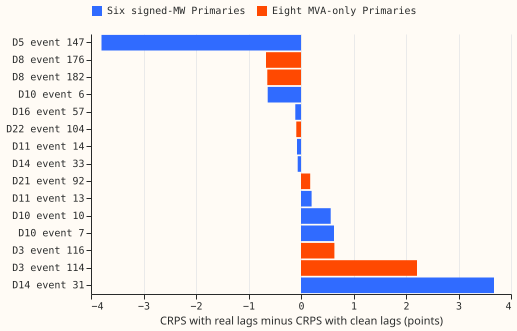

By how much would the forecast with power lags improve on harm rows if the lags inside each real load-shift event were replaced by clean values?
Status: done. The scored sample is too small to settle batch 0. The sections from "Question" onward are the plan, written before any score existed. This experiment is batch 0 of the experiment 404 plan, run as its own experiment so that the experiment 404 session is not blocked. This experiment needs no neural network, no GPU, and no fit.
Results
Real lags scored better than clean lags at the six signed-MW Primaries, but 9 events carry the result. The gain is the mean CRPS with real lags minus the mean with clean lags, in points of effective capacity, so a positive gain would mean that cleaning the lags helps. Intervals are 95% event-cluster bootstraps (2,000 resamples).
| Group | Harm rows | Events | CRPS real lags | CRPS clean lags | Gain | 95% interval |
|---|---|---|---|---|---|---|
| Six signed-MW | 5,354 | 9 | 5.061 | 5.897 | -0.836 | -2.578 to +1.226 |
| Eight MVA-only | 3,241 | 6 | 6.514 | 6.489 | +0.024 | -0.574 to +1.529 |
| All 14 | 8,595 | 15 | 5.609 | 6.120 | -0.512 | -1.804 to +0.909 |

- By lead band at the six: days 1 to 2 -0.773, days 3 to 5 -1.333, days 6 to 10 -0.463. Every interval includes zero.
- By Primary at the six: D5 -3.800 (1,629 rows, one event), D10 +0.190, D11 -0.031, D14 +1.957, D16 -0.109. D9 has no scored event.
- Without D5's one event the six give 3,725 rows, 8 events, a gain of +0.460, and an interval of -0.102 to +1.631. The range over every leave-one-event-out gain at the six is -1.278 to +0.460, and only dropping that event flips the sign.
- Clean lags win on fewer rows: at the six, 2,284 rows score better with clean lags, 3,046 worse, and 24 tie; at the eight, the counts are 1,633 and 1,608.
The decision rule in the experiment 404 plan says to skip batches 1 and 2, and the data does not support relying on it. The point estimate at the six, -0.836, is under the 0.1 threshold. The interval runs from -2.578 to +1.226, so it includes the threshold, and one event decides the sign. The prediction for the six (a gain of 0.02 to 0.15) is not met. The prediction for the eight (under 0.05) is met, with a gain of +0.024 and an interval of -0.574 to +1.529.
Why the sample is small
The harness scores 15 of the 184 corrected events. Of the 78 events at the six, 9 are scored, and of the 88 at the eight, 6 are. The other 18 corrected events belong to D15 (6) and D18 (12), which are in neither group, and the script was not run for them. Seven Primaries (D9, D2, D4, D12, D19, D15, and D18) have no scored event.
Only 36 of the 184 events have a lag that any test forecast origin reads, as experiment 414's audit counted them. A forecast origin reads lags up to about 7.1 days older than itself, and the 123 daily origins of the 4 test refit months (2025-10, 2026-01, 2026-03, 2026-06) read none of the other 148 events: 129 lie outside the span from the first to the last origin, and 19 fall in the untested months between refits. Of the 99 events with a gap in the stage-1 median, 96 are among the 148. The 36 events that are read divide into 2 with a gap in the observed power, 6 that fail the sign filter, 7 that fail the step-share filter, 3 that fail the bias filter, and 18 that pass every event filter. The 15 scored events are among the 18.
Checks
- Median minus mean forecast per site: not computed. The boosters' mean forecast is not stored, and this experiment scores the mixture quantiles only.
- Error of the mean or median forecast beside the quantile contrast: not computed, for the same reason.
- Triggers fired: three of the seven.
- Trigger 2 (the result contradicts its prediction): the prediction was a gain of 0.02 to 0.15 and the gain is -0.836. No explanation was tested, so the page offers an explanation as a caveat only: the clean replacement may be a worse input than the observed reading at D5.
- Trigger 4 (leaving one out flips the sign): dropping D5's one event flips the six-Primary gain from -0.836 to +0.460.
- Trigger 7 (a later design depends on the headline): the experiment 404 plan skips batches 1 and 2 on this number.
- Audit: a fresh Sonnet agent re-derived every number in the results table from the per-row scores and agreed. It found no duplicated rows and no missing scores, ran the leave-one-out checks. Its bootstrap, with a different seed, gave intervals within 0.2 of the ones reported, a spread that is unsurprising with 9 and 6 clusters. Its findings are in the sections above. Its event counts were superseded by the lag-reach count in "Why the sample is small".
Caveats
- The booster, not the bundle. The gain is for experiment 392's R1 lagged boosters. Experiment 402's stored tables use experiment 381's weekly-refit XGBoost bundle, which scores 5.119 with lags on its harm rows at the six. This experiment's 5.061 is on a different, much smaller row set.
- The replacement is an estimate. Clean lags are the stage-1 median plus a pre-event bias, so they are not the true demand without the event. Two explanations for the negative gain at D5 are untested. The replacement may be a poor estimate, or the boosters, which were fit on real lags, may score worse on inputs they never saw in training.
- Single seed and four refit months. Every number is interim.
Question
This experiment sets out to measure the most any lag-trust method can gain on harm rows. A lag-trust method down-weights the lagged power readings that sit inside a load-shift event. If the readings inside the event were replaced by clean values, the forecast could not be misled by them, so the score gain from that replacement is an upper bound on the gain of any method that changes no other input to the forecast. If the upper bound is under 0.1 points, a learned trust weight cannot be worth building.
Stored forecasts versus re-prediction
The stored forecasts cannot be re-scored with replaced lags, so the script re-predicts with the boosters. Experiment 402 step 1 read experiment 400's stored forecast files (experiment 381's weekly bundle, with and without lags). Those files hold forecasts made from the observed lags only. Replacing the lags means predicting again, which needs the XGBoost boosters. Experiment 402's step 2 already re-predicts with experiment 392's R1 lagged boosters, which are on disk, so this experiment uses those. This experiment reuses that harness and adds a score. The consequence is that the gain is measured on the R1 boosters, not on the weekly bundle that experiment 402's other tables use. The report states this, and also states the R1 boosters' own CRPS with real lags, so that a reader can compare it with the bundle's 5.119.
Method
- Events and clean values. Experiment 400's corrected events per Primary. Inside each event, the reading is replaced by experiment 391's stage-1 median plus the mean of (reading minus median) over the 7 days before the event. Events whose measured step is under 25% of the labelled depth, whose sign disagrees with the label, or whose pre-event bias exceeds half the step are skipped, as in experiment 402 step 2.
- Runs. For each event and each of the four refit months (2025-10, 2026-01, 2026-03, 2026-06), up to 6 daily forecast runs, spread evenly over the runs whose lags touch the event. Each run is predicted twice by the refit's booster for that Primary: with the observed series, and with the clean series. The actual power is the observed series in both cases.
- Harm rows. Rows with at least one of the three lags inside the event, a target time outside every event of that Primary, a finite actual, and a lead of up to 240 hours.
- Scores and contrast. Row CRPS for both forecasts. The gain is the mean CRPS with observed lags minus the mean with clean lags, over all harm rows. The interval resamples whole events.
- Groups. The six signed-MW Primaries (D5, D9, D10, D11, D14, D16) carry the decision. The eight MVA-only Primaries (D2, D3, D4, D8, D12, D19, D21, D22) are reported beside them. Gain by lead band (days 1 to 2, 3 to 5, 6 to 10) and per Primary are reported.
Caveats written before the run
- The sample of runs is not the full harm-row set. At most 6 runs per event and refit month are scored, so events with many runs are under-weighted against the full set. Row counts are smaller (8,595 against experiment 402's 43,024).
- A row can appear under two events. Each event is scored on its own, with only that event's lags replaced, so a row whose lags touch two events is scored twice, once per event.
- The replacement is itself an estimate. The stage-1 median plus a bias is not the true clean load, so the gain is an estimate of the upper bound, not the bound.
- Four refit months, one seed. The R1 boosters are single-seed, so every number is interim.
Problems caused by the move
None so far. Experiment 402's modules sit on an unmerged branch, so this experiment copies the files it needs.